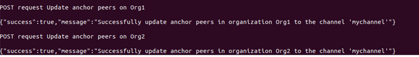
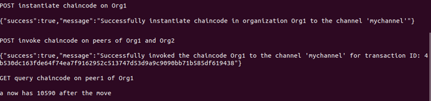

創新構想-Mind map
打造自主可控聯盟式區塊鏈供應鏈、加速實現5G資訊爆炸時代的新經濟發展模式:
允許制分散型區塊鏈帳本佈署系統，可授權節點參與交易驗證及存取所有的資料，並提供專有任務節點專司職背書排序等治理架構及具商業邏輯的智能合約,以資產代替貨幣等特性。有別於匿名制外可擴增為實名制帳戶正可配合金融監管所需的反洗錢 (AML) 、身份驗證 (KYC)與(GDPR)規範。亦符合金融機構所需求的區塊鏈。
解決傳統Web系統在承接Blockchain資料及轉換儲存問題&提升系統可維護性、獨立性、可擴展性:
由於目前區塊鏈特色及優點的確吸引當代風行而企業採行多年傳統WEB系統上銜接及資料轉換問題,及聯盟安全考量往往讓企業在更替系統開發上多有躊躇不前，因此本專案目的解析區塊鏈應用的整體特色及企業經營發展潛力，並透過實作解決系統間兼容併行及資料轉換儲存難題，藉本研究利用API的架設實例衍伸區塊鏈應用實作說明，藉此增加系統開發及轉換上線的效率, 提升系統的可維護性、獨立性、可擴展性與可重用性。
簡化系統開發及上線時間的緊迫度:
傳統的支付系統係以「銀行」為中心，概念上指的是一項允許支付服務使用者（payment services users）二造透過支付服務提供業者（paymentservice providers）進行資金移轉，而支付服務提供業者再利用其在中央銀行或其他商業銀行之帳戶進行清算的架構（structure）及程序（process）4。「第三方支付」（third-party payments）服務平台的出現逐漸挑戰系統的效能及架構的複雜性,如何有效簡化系統運作流程及效能提升是必需在開發階段構思全局妥當。
市場潛力&分析
現有的產業規模
全球2015-2016供應鏈金融潛在市場:
全球區塊鏈金融體總量:
供應鏈金融潛在市場在歐洲和美國份額最大,但在亞洲和拉丁美洲,買方項目正在迅速增長。根據數統計,全球供應鏈金融市場在2016年歐洲達到1350億美元,在美洲達到2350億美元,非洲70億美元, 亞洲708億美元。其中以亞非洲變動率分別高達69%及50%由此可見亞非發展濳力有很大。2018年全球Fintech投資額553億美元，其中以亞洲投資額佔54%，尤其中國投入區塊鏈規模居冠。
金融新藍海潛力開發:
全球正在利用這一共用價值體系，創新於實體金融FINTECH領域並積極開發非銀體系的新藍海領域(全球約25億人有智慧手機但未有銀行帳戶),在各行各業開發去中心化電腦程式，在全球各地構建去中心化自主組織和去中心化自主社群,隨著科技、經濟、環境結構的改變進而改革與合作、並開放價值鏈方式共享資訊再加速改變及顛覆以往不同社會生活方式,並且有效率且信任解決人們所面臨行、住、衣、食、健康醫療等等關於日常生活一切。
全球跨域價值聯網生態體系應用統計:
根據WEF統計，截至2016止，全球己有超過24個國家地區投入區塊鏈技術發展、90個國家央行開啟區塊鏈應用討論，90家 以上的大型企業加入區塊鏈相關聯盟組織。另有超過2500個區塊鏈相閞專利被提出，預估2017年全球將有8成以上的銀行開啟區塊鏈相關專案。
據調查金融服務是供應鏈金融技術領導者:
普華永道（PwC）在2018年對來自15個地區的600位高管進行的調查中，有84％的受訪者表示其組織至少參與了區塊鏈技術。Gartner發現，2017年報告的區塊鏈用例中有82％用於金融服務，但2018年該部門的比例下降至報告的用例中46％。我們的調查受訪者仍然認為金融服務是當前和近期的領導者區塊鏈。
商用區塊鏈介紹
區塊鏈基礎理論
區塊鏈（BLOCKCHAIN）技術是密碼學理論應用加強保護交易記錄。每一個區段包含了鏈接上游區段的加密位址、時間戳記以及交易內容，這樣的設計具有難以篡改的特性。使用分散式帳本能讓參與交易方有效紀錄交易，且可永久查驗。
區塊鏈簡易交易流程
交易簡單運作流程:
stpe1假設A要轉錢給B → step2交易提交至block → step3各節點透過廣播進行核查狀態達成共識 step4 對所形成有效block由miner鏈到長鏈上→step5完成一筆交易 (公鏈上交易)
區塊鏈不是依賴於政府等中央機構進行驗證和執行，而是以分散的方式解決了這個問題。它消除了信任貢獻者或任何權威的需要。它被稱為無信任網絡，這意味著不需要任何信任，因為任何成員都可以驗證所有信任。無信任系統的概念如何運作？貢獻協議稱為共識。即使一個成員不同意，無論是出於惡意目的還是通過誤傳，都會達成共識。區塊鏈的主要功能是保證數據的共識和不變性。通過需要證明或投票閾值的一致性算法獲得共識。區塊鏈可以被認為是數據的分類帳，因此確保數據不會被篡改（不變性）可以驗證分類帳狀態。沒有人可以回去改變這些記錄。傳統上，分類賬被視為金融交易的記錄。但是，該概念適用於任何類型的數據。人們可以輕鬆地將文檔，圖像，日誌文件或其他項目存儲在區塊鏈中。甚至可以存儲分散的程序，也稱為智能合約。智能契約允許在區塊鏈上執行代碼，但代碼本身及其輸出只是一種特殊類型的數據。

商用區塊鏈運作流程
客戶端：客戶端應用使用 SDK 來跟 Fabric 打交道，構造合法的交易提案提交給 endorser；收集到足夠多 endorser 支持後可以構造合法的交易請求，發給 orderer 或代理節點。 Endorser peer：負責對來自客戶端的交易進行合法性和 ACL 權限檢查（模擬交易），通過則簽名並返回結果給客戶端。 Committer peer：負責維護帳本，將達成一致順序的批量交易結果進行狀態檢查，生成區塊，執行合法的交易，並寫入帳本，同一個物理節點可以同時擔任 endorser 和 committer 的 角色。 Orderer：僅負責排序，給交易們一個全局的排序，一般不需要跟帳本和交易內容打交道。 CA：負責所有證書的維護，遵循 PKI。
商用區塊鏈特色
可去中心化(decentralization)的資料庫:
去中心化是一種結構，在區塊鏈內的用戶都是一個節點，每個節點都可以連結其他的節點並互相影響，節點是分散且平行的，因此每個節點的權利和義務都是對等的，而系統的數據是透過區塊鏈的共識機制讓所有節點達成共識，具體而言就是區塊鏈內的參與者皆可參與數據的維護，從而不在依靠中央處理的單位，以實現數據的存儲與更新。
分散式帳本(distributed ledger):
分佈式分類帳網路拓撲架構，分類帳的數據由區塊鏈內全部節點一起公同維護，為分散式的分類帳網路拓撲架構，例如：Ethereum、比特幣等，該架構下許多企業不願意接受一個數據完全開放的網絡架構，並且參與者皆是匿名的，無法知道他們的身份，為了解決商業上的問題為此商用區塊鏈發展出了分佈式分類帳網路架構，商用區塊鏈有其特有的網路拓撲架構，由於分類帳是以Channel做為區分，也就是說Channel上的參與者都會有一份相同的分類帳，因此商用區塊鏈擁有不同的網路拓撲架構。該架構下權力不是集中在某一個機構，也不是完全的分散在每個節點，而是透過需求把權力分散在多個特定的節點上，由這些特定的節點共同維護分類帳的數據。
加密技術和授權技術(cryptography & authorization):
區塊鏈把數據紀錄存放在區塊內，而每個區塊包含了一個前一個區塊的Hash值、一個時間戳及交易的數據，並透過Hash演算法實現鏈，因此第N的區塊Hash值是由第N區塊的內容與第N-1區塊的Hash值所產生的，為此每個區塊都可以對應到前一個區塊，從而達到數據的可追蹤性,塊鏈網路中每個參與者，包含販賣者、購買者、提供商、管理員等等，這些參與者都具有一個的憑證，這個憑證可以認定參與者的身份，給予每位參與者在區塊鏈網路中擁有的權限。
共識機制(consensus):
所有的交易數據都會按照發生的順序，依序存入分類帳內，但由於這些交易數據的參與者都是在不同的網路之中，因此有可能會有錯誤或者惡意的數據加入分類帳中，為了避免這種情況所以在數據加入分類帳內之前需要經過幾個共識節點達成共識後才能把交易數據加入至分類帳之中，共識機制是經由電腦科學的演算法來實現，有很多種的共識演算法可以實現，每個方法都有不同的使用時機。
智慧合約(smart contract):
智能合約具體而言就是使用程式碼來撰寫合約，並交由系統自動執行合約內容，換句話說智能合約就是處理商業邏輯的部分，Chaincode可以透過Solidity,Golang,Python和Java等等多種程式語言來進行編。
公有鏈&聯盟鏈/私有鏈差異
傳統應用及區塊鏈應用比較
金融業是一個重度依賴資訊流的行業,每一個跨部門對於資料更新、接收查詢流量甚至儲等在5G資訊爆炸時代，使得資訊DATA取得更有信認度、合規安全管理、查詢速度快、便利及存儲DATA羽量化甚至在人工處理上可以減少作業風險，商用區塊供應鏈整個系統的連接擴展度高可形成強大的連盟體系正是目前新銀行4.0全方位科技服務所需求的規格及配備條件。
系統規劃展示
我們從圖中可以利用到各系統的應用特性，發展區塊鏈的應用系統在未來的發展中金融業影響競爭力的首重之要，因為它符合了各項需求面及資訊流即使性，但改變一個整體系統是需要投入研發成本及各項階段測試配合不是一項觸手可及馬上可以上線使用項目，如何在整個新舊系統資料的銜接上及可以同時間雙併行兩個系統，即是本創新課題思考模式，讓區塊鏈技術應用不在是遙不可及又能解決系統間兼容併行及資料轉換儲存難題，藉本研究利用API WEB的架構實例衍伸區塊鏈應用實作說明，以增加系統開發及轉換上線的效率, 提升系統的可維護性、獨立性、可擴展性與可重用性並且可整合來自不同交易系統資訊管理。
模擬作品
Model
主要提交內容在資產、參與者、交易的定義
Access Control
主要提交內容在商業邏輯規則定義

script
主要提交內容在方法執行
建立商業網卡
商業網卡是身份，連接配置文件和元數據的組合，元數據可選地包含要連接的商業網絡的名稱。商業網卡簡化了連接到商業網絡的過程，並將身份在網絡之外的概念擴展到身份的“錢包”，每個“錢包”都與特定的商業網絡和連接配置文件相關聯。
成員參與者
參與者是業務網絡的成員。他們可能擁有資產並提交交易。參與者類型已建模，並且像資產一樣，必須具有標識符，並且可以根據需要具有任何其他屬性。參與者可以映射到一個或多個身份。

資產
資產是有形或無形的商品，服務或財產，並存儲在註冊表中。資產幾乎可以代表業務網絡中的任何內容，例如，待售房屋，出售清單，該房屋的土地註冊證以及該房屋的保險單據都可以是一個或多個業務網絡中的資產。
交易總覽
交易是參與者與資產互動的機制。在此可以查詢到全部通道上所有交易情形及數量
單筆歷史交易查詢
歷史記錄是專門的表，用於記錄成功的交易，包括參與者和提交交易的身份。歷史記錄將事務存儲為HistorianRecord資產，這些資產在提交model內容名稱空間中定義。

事件記錄查詢
事件在業務網絡定義中的定義方式與資產或參與者相同。定義事件後，交易處理器功能便可以發出事件，以向外部系統指示總帳已發生重要事件。應用程序可以通過composer-clientAPI 訂閱發出的事件。
API測試&效能
商用區塊鏈API可用於：建立頻道/要求對等節點加入頻道/在同行中安裝鏈碼/實例化通道中的鏈碼/通過調用鏈碼來調用交易/查詢分類帳中的交易或凍結/不同組件如何協同工作
以下進行以上API的post/get/update模擬以上功能包括產生通道/註冊會員/交易/鏈碼/查詢等共花46秒完成,故商用區塊鏈效能極佳。
註冊成員post
註冊成員成功結果
建立頻道post
建立頻道成功結果
更新狀態post
更新狀態成功結果

在同通道中安裝鏈碼post
在同通道中安裝鏈碼成功結果
實例化通道中的鏈碼&調用交易post&查詢分類帳中的交易get

實例化通道中的鏈碼&調用交易&查詢分類帳中的交易成功結果

查詢鏈碼以獲取最新的應用程序狀態get
查詢鏈碼以獲取最新的應用程序狀態成功結果
查詢花費時間結果
商業模式
競爭者分析
資金&財務
資金籌劃
以建立新創公司假設立場初期經費需求分成2階段:
1.研發階段研發資金:
假設在第1年能夠努力獲得政府輔助款、自籌款30%及接洽台灣金融體系系統外包70%，第1家先以合作研發提供公司研發經費為合作要點研發階段定為3年，開發階段中皆可併行新舊系統及資料轉換確保安全無虞，第1家合作廠商必要有先發的市場優勢，不收取一次性系統導入費用，提供之後維護費用特別優惠。
2營運階段資金:
研發之後試營運階段籌備資金以新創公開群眾募資及員工認購股權，股東權益與融資舉債併行計算最佳邊際效益，並開始複製穏定軟體程式，分功能開始正式行銷可上線軟體系統，此時軟體系統主收益流純利空間將會放大數倍,另有每年維護費用來攤銷營運成本。
財務預估
損益預估
資產負債平衡預估及成長率預估:
以計劃中5年即60個月平均擹提研發成本即產品服務成本,並每年以金管會調查統計非現金支付成長保守預估有10%成長為預計核心營收長成率，並每年維持純利20%為預備新產品開發計劃預備金。
團隊介紹
團員:張秀萍、謝珊紜、張佳玲、陳昱潔
我們是來自南台灣最大的科技大學金融資訊研究所主攻項目:Bitech&Fitech,團隊工作大致分為程式撰寫、行銷企劃、金融資訊數據分析、資料處理、繪圖製作等方向，成員們發揮各自所長且將所學的學以致用，期望實現團隊目標並打造自主可控聯盟區塊鏈加速實現資訊共享的新經濟發展模式。
聯絡我們